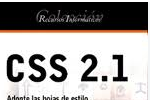

| Any | Especificacions | Enllaços | Imatge | Any | Especificacions | Enllaços | Imatge |
|---|---|---|---|---|---|---|---|
| 1989 | Creació d'HTML | HTML | 1998 | CSS 2 | CSS 2 | ||
| 1995 | HTML 2.0 | HTML 2.0 | 1999 | HTML 4.01 | HTML 4.01 | ||
| 1996 | CSS 1 | CSS 1 | 2000 | XHTML 1.0 | XHTML 1.0 | ||
| 1997 | HTML 3.2 | HTML 3.2 | 2001 | XHTML 1.1 | XHTML 1.1 | ||
| 1997 | HTML 4.0 | HTML 4.0 | 2002 | CSS 2.1 (inici del desenvolupament) | CSS 2.1 |  |
|
| 1998 | CSS 2 | CSS 2 | 2008 | HTML5 (primer esborrany públic) | HTML5 | ||
| 1999 | HTML 4.01 | HTML 4.01 | 2014 | HTML5 (recomanació oficial) | HTML5 | ||
| 2000 | XHTML 1.0 | XHTML 1.0 | 2016 | HTML 5.1 | HTML 5.1 | ||
| 2001 | XHTML 1.1 | XHTML 1.1 | 2017 | HTML 5.2 | HTML 5.2 |